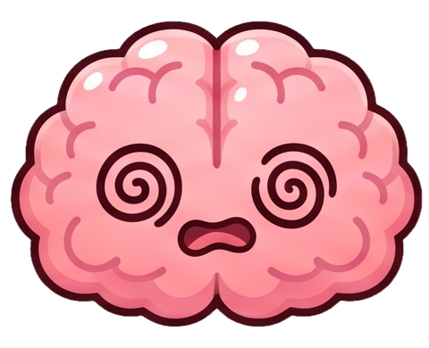

A lightweight Android overlay that counts every single swipe on Instagram Reels & YouTube Shorts. Witness your mind deteriorate across 10 visceral stages.
Built for the modern attention deficit. No streaks to gamify your time, no XP to reward your scrolling. Just raw transparency.
Utilizes native Android Accessibility APIs to detect vertical scrolls inside Instagram Reels and YouTube Shorts feeds. A 5-minute sliding deduplication window guarantees that scrolling back up does not generate false counts.
A compact neon pill hovers on your screen whenever you enter supported feeds. Drag it anywhere or tap to inspect your session metrics.
Watch your neural avatar transform from pristine focus into absolute fried singularity as your reel count climbs throughout the day.
Compare Instagram Reels versus YouTube Shorts to identify where your focus leaks most. Detailed hourly breakdowns show exact moments when doomscrolling takes over your day.
Zero phone numbers, zero contact syncing. Connect via anonymous 6-character tokens to compare daily counts and stages in real time.
No video content is viewed, recorded, or sent to external servers. All counts stay on your device unless you opt into the friends leaderboard.
Select any stage to inspect its neural condition, daily reel threshold, and symptom diagnosis.
Your brain is thriving. Natural focus is intact, attention spans are long, and cognitive vitality is at its peak. Keep it up!

S5 · 76-100 OverstimScrolling in secret hides the damage. Pair with your inner circle to witness who is surrendering more hours to the algorithm.
Generate a private friend code in seconds. No email registration or phone number linking required.
Rankings refresh in real time as reels are watched. Watch your friends transition through stages as the day progresses.
Compare daily averages, 30-day totals, and inspect whether your friend is losing more hours to YouTube Shorts or Instagram Reels.
A simple, zero-friction process built to deliver honest visibility into your digital habits.
Grant standard Accessibility permissions so Brain Rot Meter can observe vertical feed scrolls inside Instagram and YouTube.
The moment you launch Reels or Shorts, the subtle floating overlay wakes up automatically in the corner of your screen.
Every swipe counts: +1 reel. Sliding-window logic filters out accidental quick taps and backward scrolls.
As totals rise, your neural mascot transitions through 10 stages from Healthy down to Dead Brain. It resets at midnight.
Inspect hourly peaks, 30-day graphs, and hold yourself accountable alongside your connected friends.
A dark, high-contrast UI engineered to deliver reality checks without visual distractions.
Everything you need to know about tracking, on-device privacy, and our 10-stage behavioral model.
Brain Rot Meter is an Android application that tracks how many short-form video reels you scroll through each day on Instagram Reels and YouTube Shorts. It displays a real-time floating overlay, visualizes cognitive decay across 10 brain stages, and offers friend leaderboards for peer accountability.
The app registers an Android Accessibility Service to detect forward scroll motions inside verified Reel and Short feeds. A 5-minute sliding window filter prevents accidental duplicates when you scroll back up, and a 750ms dwell-time threshold filters out rapid skipping. Video frames, cameras, messages, and audio are never accessed or recorded.
The 10 stages range from Stage 1 Healthy (0–30 reels) through Stage 6 Fried (221–300 reels) to Stage 10 Dead Brain (601+ reels). Each stage reflects your daily consumption, shifts the floating HUD mascot's color and expression, and resets automatically every night at midnight.
Standard tools like Apple Screen Time and Android Digital Wellbeing only measure generic elapsed minutes, treating reading an educational e-book the same as consuming 200 rapid dopamine-spiking 10-second reels. Brain Rot Meter counts exact swipe volume with an active floating HUD overlay providing instant behavioral feedback.
Brain Rot Meter was designed and engineered by Ramanand Kumar, an independent software developer and founder of RamaScript, dedicated to building honest, privacy-first software that combats algorithmic dopamine loops.
No. Brain Rot Meter operates with a strict 100% on-device architecture. It never reads keystrokes, personal messages, passwords, or video content. It detects only the physical swipe gesture and container type locally inside your phone.
Yes. Brain Rot Meter is 100% free with no paywalls, subscriptions, or advertisements. Awareness should not be gated.
An indie software lab built by RamaScript to fight algorithmic addiction with radical transparency.
Founder & Principal Android Engineer at RamaScript
Modern social platforms are engineered to trap your attention inside infinite dopamine loops, while default "Digital Wellbeing" dashboards only provide passive, delayed minutes. I built Brain Rot Meter to provide immediate, visceral biofeedback right as you swipe. No cloud data harvesting, no intrusive advertising—just the raw truth about where your hours go.
Your brain is already counting. Now you can see the truth.
Developer-transparent, local-first terms designed to protect user privacy and establish service boundaries.
Brain Rot Meter, its 10-stage evolution scale, symptom classifications, timers, and metrics are designed strictly for habit awareness, personal productivity tracking, and entertainment gamification. Brain Rot Meter does NOT provide medical, neurological, clinical, psychiatric, or psychological diagnosis, treatment, or advice. Reliance on any information provided by the app or website is solely at your own discretion and risk.
Brain Rot Meter employs the Android AccessibilityService API strictly to recognize container transitions and vertical swipe gestures within supported short-form video players (Instagram Reels and YouTube Shorts). The Accessibility Service runs entirely in a sandboxed environment on your local device. It NEVER reads, logs, stores, captures, or transmits personal messages, chats, passwords, form entries, credentials, camera/microphone streams, or video content. Enabling this service is completely voluntary and can be revoked at any time via Android System Settings.
All core counters, platform splits (Instagram vs YouTube), daily milestones, and stage calculations are processed and stored exclusively in your device's local database. When you voluntarily use the Friends Leaderboard, only minimal non-personally identifiable operational tokens (a randomly generated 6-character friend code, chosen nickname, and aggregate reel counter) are synchronized via secure Google Cloud Firestore. No email address, telephone number, real name, or device IMEI is ever requested or stored.
Brain Rot Meter and this website are provided strictly on an “AS IS” and “AS AVAILABLE” basis without warranties of any kind, whether express, statutory, or implied, including but not limited to merchantability, fitness for a particular purpose, non-infringement, or continuous uptime. RamaScript makes no guarantee that reel detection will remain uninterrupted or compatible with future third-party application UI updates.
To the maximum extent permitted by applicable law, RamaScript, its creator, affiliates, and licensors shall NOT be liable for any indirect, incidental, special, consequential, or punitive damages, loss of data, loss of time, or device irregularities arising out of your access to or use of the application. The user agrees to indemnify and hold harmless the developer against any claims, liabilities, or disputes arising from misuse of the app or violation of these terms.
Brain Rot Meter is an independent utility created by RamaScript. It is not affiliated with, endorsed by, sponsored by, or associated with Meta Platforms, Inc. (Instagram), Google LLC (YouTube, Google Play, Android), or any of their affiliates.
You retain complete autonomy over your data. You may instantly erase all local counters by clearing app data in Android Settings or uninstalling the app. To request permanent deletion of your cloud friend code or leaderboard profile, contact us at the address below.
For privacy questions, legal inquiries, or cloud data deletion requests, contact developer at: ramascript.main@gmail.com · View Standalone Privacy Policy →